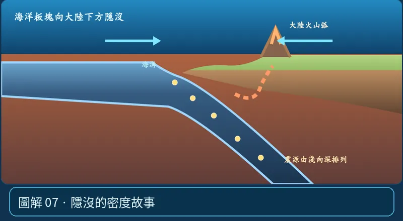

第 05 單元｜圖解 7/8｜課本 p.80–88
隱沒的密度故事
海洋地殼本身以較密的玄武質岩石為主；但決定隱沒還要看整塊岩石圈。海洋岩石圈離開中洋脊後逐漸冷卻、增厚、平均密度提高，較易出現負浮力。
① 看一眼② 操作圖③ 自己推理④ 揭開解答
🔬 這張圖，請自己動手試
操作圖上方的頁籤、滑桿或按鈕；圖片也能左右滑動放大觀看。
互動圖解 · 隱沒的密度故事

原創 SVG 地科教學模型，方便理解，非真實比例、非即時地震資料；互動無法載入時仍有靜態圖。
STEP 01 · 先觀察
👀 眼睛先找線索
在洋－陸聚合圖，先觀察下沉的整塊板塊，而不只看上面薄薄的海洋地殼。
💡 為什麼是這樣？
海洋岩石圈遠離中洋脊後冷卻、增厚；其平均密度與浮力條件改變，較可能在聚合邊界隱沒。
🎯 換個問法想一題
「海洋地殼比大陸地殼薄，所以海洋板塊比較會隱沒」是充分解釋嗎？
我想好了，點開看答案 ↓
不是。要看整個海洋岩石圈的密度、溫度、年齡與構造。
⚡ 一句記住：為何冷的海洋板塊較會沉